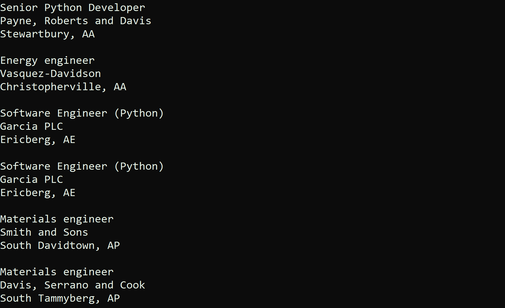

Python Web Scraper

Class: CSCI 301 - Survey of Scripting Languages
Grade: 100/100
Language(s): Python
About the Project
This project is a Python-based web scraper that extracts job information from a website, including job titles, companies, and locations. It demonstrates how programming skills can be used to automate data retrieval and streamline job searching, using Python libraries like BeautifulSoup for parsing and structuring data.
The scraper loops through job postings, retrieves elements by ID, and filters jobs based
on keywords like "Python." Key functions include loopJobs(), which displays job details,
findByID() for specific element retrieval, and findByParent(), which filters job listings
and displays application links.
Job information is output directly to the command line, allowing users to easily analyze the data. For example, filtering Python jobs will display relevant job listings with application links, as shown in Fig. 1: Filtered Job Results.
This project was inspired by the Real Python tutorial , which provided a solid foundation for learning web scraping with BeautifulSoup.
How to Run
By default, the program scrapes listings from realpython.github.io/fake-jobs/.
If you wish to scrape job data from a different website, modify the URL variable in the script:
URL = "https://your-choice-of-website.com"
To run the web scraper, execute the Python script using the following command:
python3 Webscraping.py
Once the script is executed, the program will scrape job listings (or data from any other website you set) and output the results in the command line interface. The program will display job titles, company names, and locations of relevant job postings, or any other data your modified URL returns.
Repository Information
To access the project's source code, please request access via email. Upon approval, a link to the GitHub repository will be provided. Explore the code to see the project's full functionality.
Access Repository